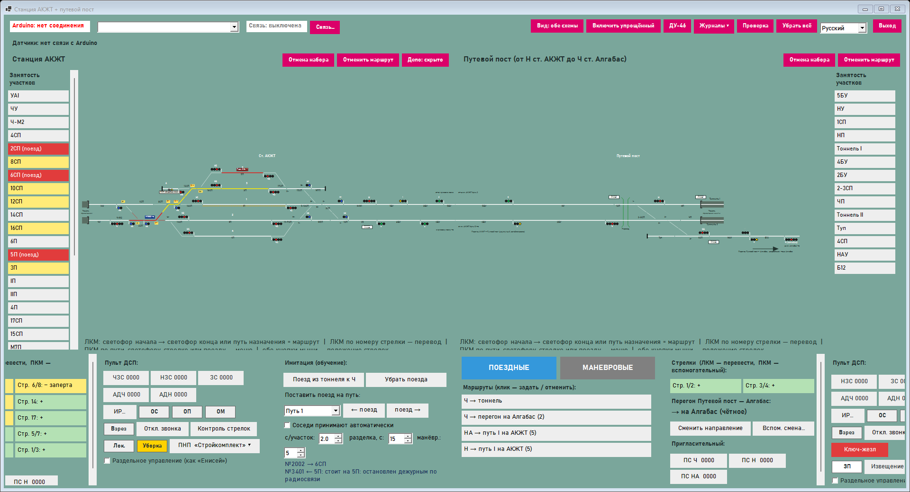

Тренажёр ДСП — инструкции · Нұсқаулықтар · Guides
Станции АКЖТ, путевой пост, Алгабас; программа преподавателя. Выберите свою роль и язык.
Студент · Студент · Student
Работа за пультом станции: маршруты, стрелки, поезда, журналы, бланки, маневры, оценка.
Преподаватель · Оқытушы · Teacher
Подготовка класса, уроки, проведение занятия, неисправности, отчёты, макет.
